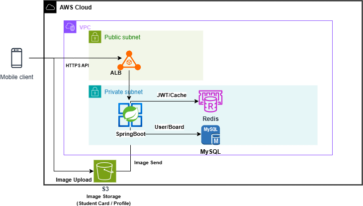

View Count
64 req/s → 453~483 req/s
처리량 약 6.0~7.6배 증가. p95 지연은 2.27s에서 0.45~0.59s로 개선했습니다.
고등학생을 대상으로 학교 인증 기반 익명 커뮤니티 서비스를 개발했습니다. 사용자 인증/권한, 게시글, 댓글, 반응, 알림, 채팅, 신고/제재 등 핵심 도메인을 설계하고 REST API를 구현했습니다.

Hot 게시글 조회 시 동일 postId에 요청이 집중되면 DB update 경합으로 p95 지연이 초 단위로 증가했습니다. Atomic Update, 비관/낙관 락을 비교한 뒤, 요청당 DB write를 제거하는 Caffeine 기반 Write-Behind 구조로 전환했습니다.
처리량 약 6.0~7.6배 증가. p95 지연은 2.27s에서 0.45~0.59s로 개선했습니다.
2만 건, 매칭 6천 건 기준 후보 탐색을 약 200ms에서 OpenSearch 11~30ms 수준까지 검증했습니다.
댓글 수 집계 N+1을 2-Phase 조회로 재설계해 API 1회 호출당 쿼리 수를 상수화했습니다.
이력서와 포트폴리오에 정리한 수치 기반 개선 결과입니다.
Spring Boot, MySQL, Redis, S3, Firebase, WebSocket 기반으로 인증, 커뮤니티, 알림, 채팅, 관리자 기능을 구성했습니다. 단순 기능 구현보다 병목 지점과 운영 트레이드오프를 함께 고려했습니다.
